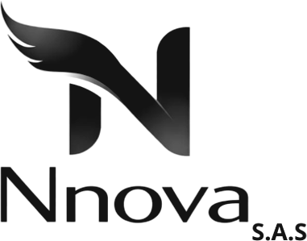
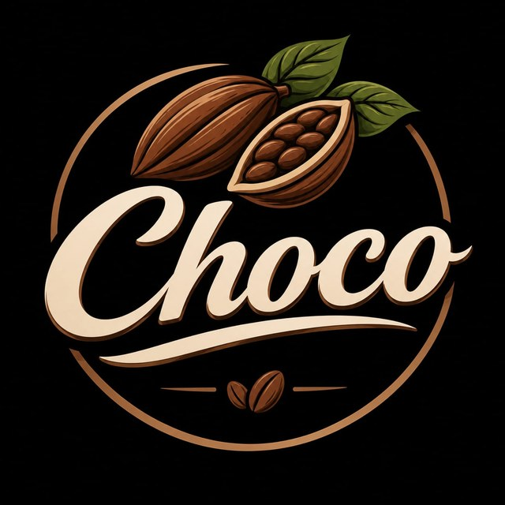

Sensor de lluvia
–
Por encima de 500 se cierra el techo.


Un sensor detecta las primeras gotas y un servomotor cierra el techo antes de que el grano se moje. Mientras tanto, CHOCO mide la humedad y la temperatura del aire para cuidar cada lote.
Ver lecturas en vivoEl ESP32 de CHOCO envía sus lecturas por WiFi y esta página se actualiza sola cada pocos segundos. Si no hay internet, también puedes conectarlo por USB a este computador.
Por encima de 500 se cierra el techo.
Medida con el sensor DHT11.
Medida con el sensor DHT11.
CHOCO repite este ciclo cada segundo, de día y de noche, sin que nadie tenga que estar pendiente del cielo.
El sensor de lluvia y el DHT11 leen el agua, la humedad y la temperatura.
El ESP32 compara la lectura de lluvia con el umbral de 500.
Si llueve, el servomotor cierra el techo. Si escampa, lo vuelve a abrir.
Las lecturas viajan por WiFi a esta página para verlas desde cualquier lugar.
Hardware de bajo costo, fácil de conseguir y de reparar en la finca.
| Componente | Pin | Función |
|---|---|---|
| ESP32 | – | Lee los sensores, mueve el techo y envía los datos por WiFi. |
| Sensor de lluvia | GPIO 32 | Lectura analógica del agua sobre la placa. Más de 500 se considera lluvia. |
| DHT11 | GPIO 25 | Humedad relativa y temperatura del aire alrededor del secadero. |
| Servomotor | GPIO 13 | Gira a 0° con lluvia y a 160° sin lluvia para mover el techo. |